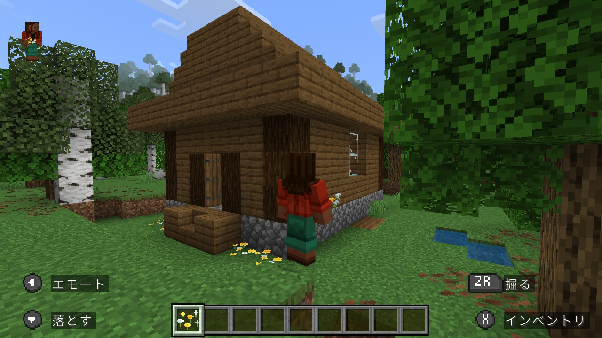
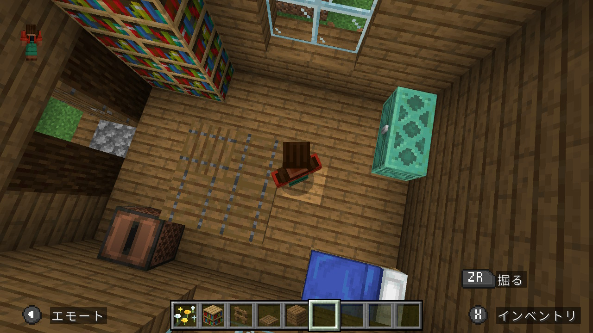

Youtbeの動画を見たりChatGPTに教えてもらったりしながら、マイクラで建物を建てるのにハマった。
とりあえず小さなログハウスを建ててみる。部屋にはベッド、チェスト、ジュークボックス、本棚、テーブルを置いた。ハロウィンの雰囲気の物も建てたい。実家の再現などをしたら面白いだろうか。


2026.10.10
Youtbeの動画を見たりChatGPTに教えてもらったりしながら、マイクラで建物を建てるのにハマった。
とりあえず小さなログハウスを建ててみる。部屋にはベッド、チェスト、ジュークボックス、本棚、テーブルを置いた。ハロウィンの雰囲気の物も建てたい。実家の再現などをしたら面白いだろうか。

